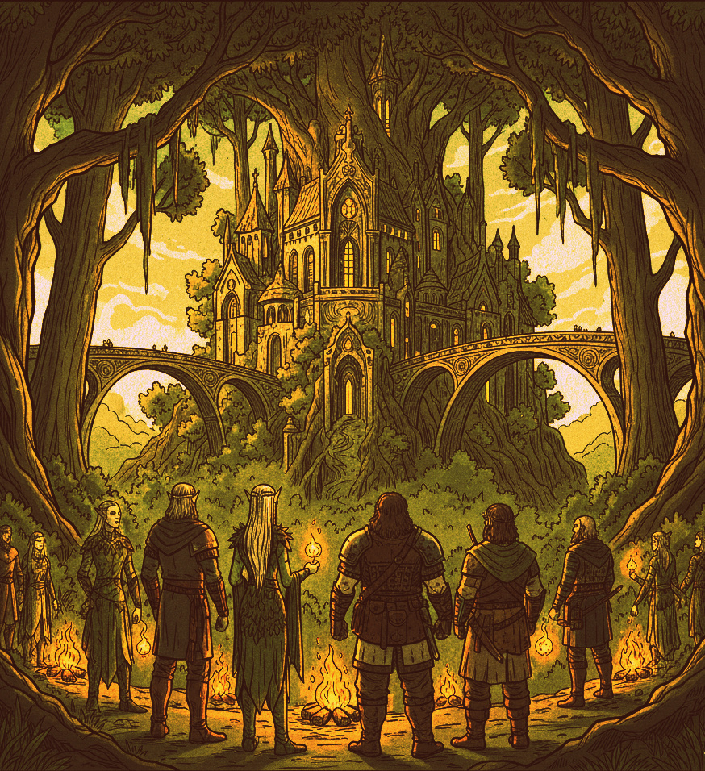
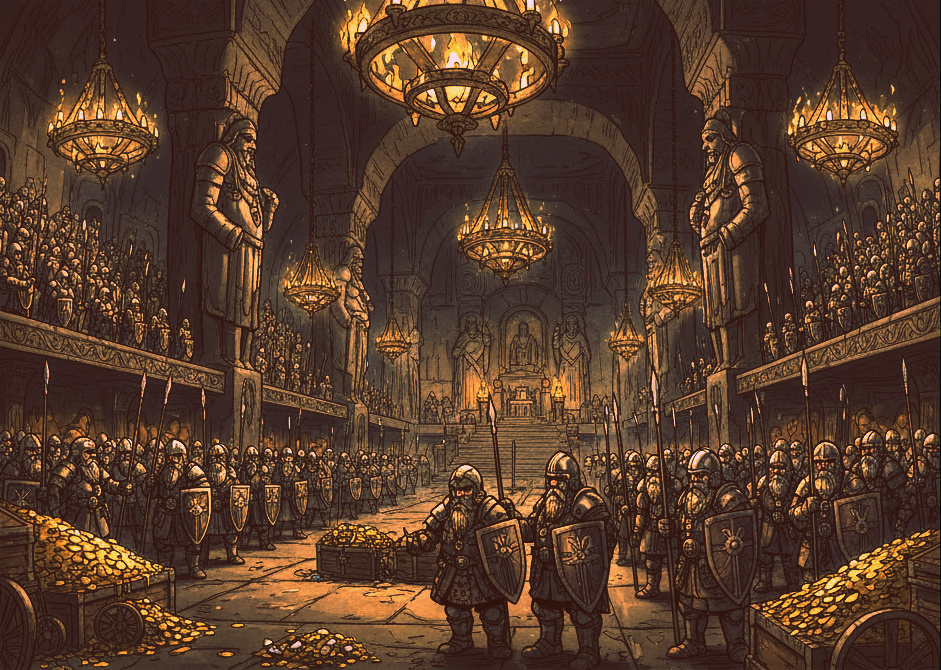
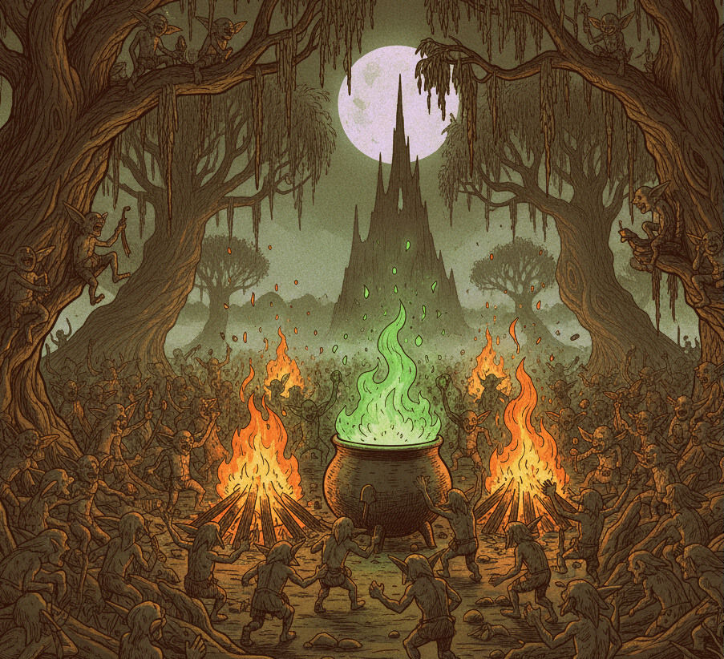
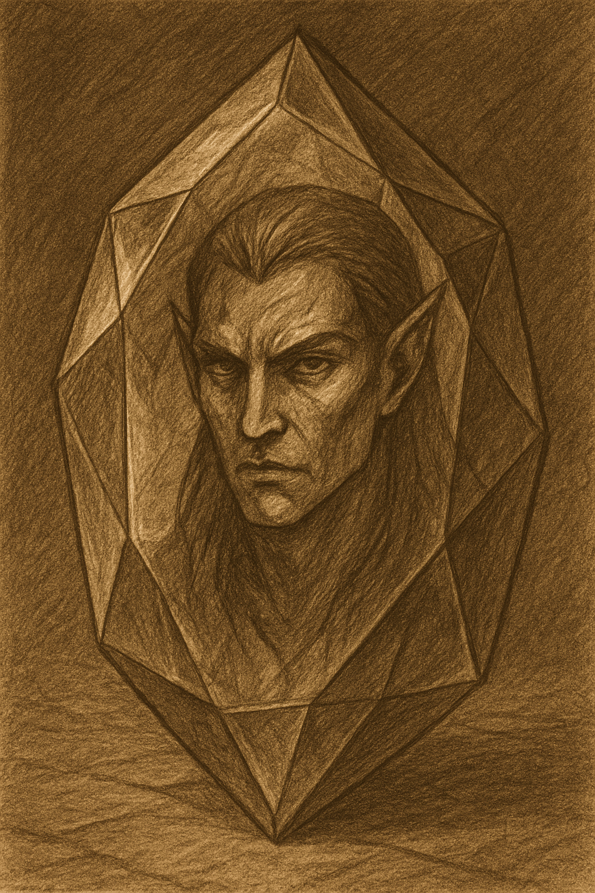
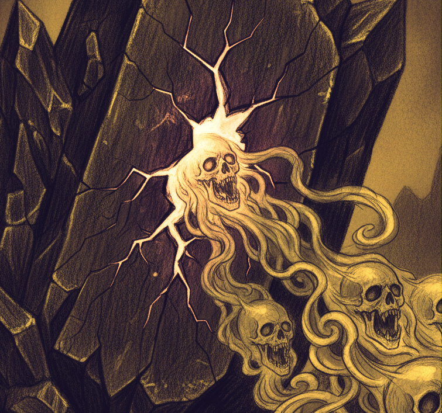
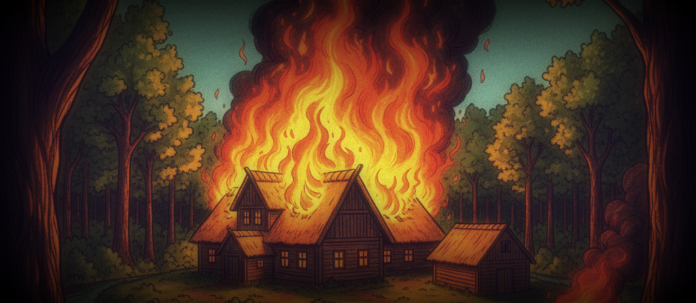
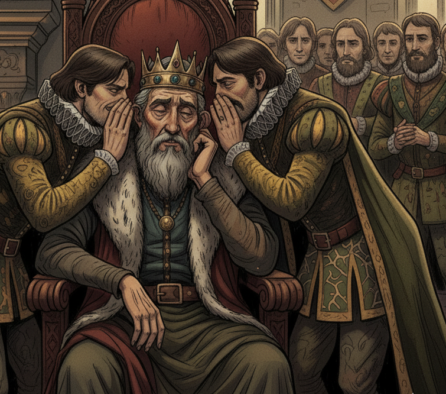
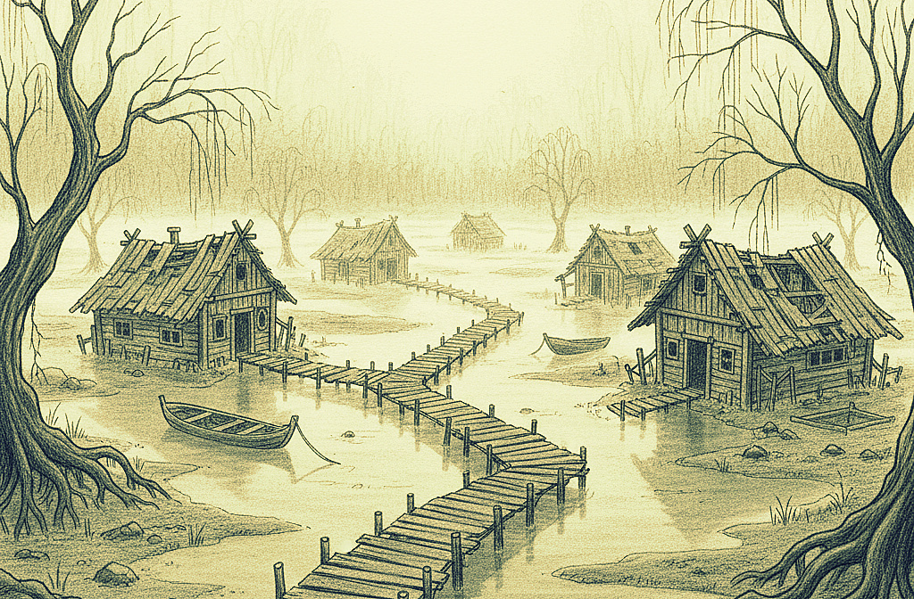

Lore of Shadows of Vornak

Figure: Political map of Nyvarra (simple preview)
The Six Realms

🌳 Grundwyn — The Realm of Greenwood — In Grundwyn dwelt the Wood Elves, proud and mighty in magic, their voices weaving storms, their arrows faster than the wind. With them came the First Men, castaways from distant seas, who bent knee to elven lords and learned their ways. Together they forged uneasy bonds: elves shaping sorcery from root and star, men shaping stone and steel into fortresses beneath the green canopy.
⛰️ Elenor — The Hollow Mountains — Elenor, the hollow mountains, glittering with forges and deep halls. This was the realm of the Dwarves, masters of craft. Few in number, yet their armor gleamed like the sun, and their engines roared with power no other race could match. Their cannons spat thunder, their axes split stone, and their greed for the earth’s treasures was as endless as the mines they dug.


🐉 Vornak — The Drowned Realm — Vornak, the drowned swamps, steaming with mist and secrets. Here, among black waters and tangled roots, the Goblins reigned. Countless were their numbers, fierce their spirit. They knew the herbs that could cheat death itself, plucking life back from the edge of the grave.
❄️ Skjölend — The Frozen Edge — Skjölend, the frozen isles at the world’s edge. A land of eternal frost, where Giants strode, vast and terrible, alongside mammoths and white bears born of the ice. It was a place of titans, where storms howled like living beasts, and only the strong endured. Those who walked Skjölend carried the strength of the mountain in their bones — though now, their kind has vanished into legend, leaving only empty peaks and whispers in the snow.
☀️ Dun’vahr — The Golden Expanse — Dun’vahr, a sea of golden sand, vast and empty beneath the burning sun. The coasts were not empty though. There, hidden among jagged cliffs and salt caves, smugglers and pirates carved their lairs. They were wolves without a master, striking at passing ships, vanishing into the sands. Dun’vahr was no empire — only a wound in the world, a place of pirates and thieves.
🌑 The Shattered Shoals — The Realm of the Dark Elves
— And last, The Shattered Shoals — broken coasts and jagged
isles, forever lashed by storm and sea. Here ruled the
Dark Elves, cloaked in silence. Their black spires clung to
cliffs of obsidian, their eyes turned ever inward, guarding a secret
greater than kingdoms: the Ebony Ice.
This crystal was no mere stone, but the soul of eternity. It drank
the spirits of the dead and bound them within its frozen heart,
granting power unending — power to forge weapons that burned with
soul-fire, to shape machines that defied nature itself. Yet each
shard whispered madness, corrupting all who dared wield it. Only the
Dark Elves could master it. Only they could guard it. And guard it
they did, in cold silence, while the other realms schemed and bled.

Fig: The High Maester Ozvark
 Fig: Dark elf council at The Shattered Shoals.
Fig: Dark elf council at The Shattered Shoals.
The Temptation of Ebony Ice
And it was these pirates who first carried whispers of a strange black crystal, taken from the Shattered Shoals. Whispers grew into rumors, and rumors into fire — until across Nyvarra, kings and councils turned their gaze toward the dark elf realm.
The Wood Elves of Grundwyn, masters of sorcery, grew restless. Proud and but not eternal, they dreamed of wielding Ebony Ice to bend life and death itself, to command storms, to reign without end. To them, it was not treasure — it was destiny.
The First Men, a small host of exiles dwelling beneath the Elves’ boughs, weaker than all others yet fierce in spirit, saw in the Ice a chance to carve themselves into history. They dreamed of returning to their lost heartland with weapons unstoppable, and to avenge the shame of their exile.
The Goblins of Vornak, countless as swarms, hungered for it as an ingredient of immortality. To them, it was not crystal but a seed — a seed to graft into their herbs and brews, to make flesh endure beyond time, to cheat death itself.
The Dwarves of Elenor, proud lords of forge and stone, hungered with a fire unlike the rest. To them, the Ebony Ice was not treasure but fuel — the ultimate heart for their engines of war, a spark to turn their forges into suns. They dreamed of earth-eaters, iron leviathans that could grind mountains to dust and march with armies of flame. In their secret councils, they whispered of Skjölend itself, and how one day their machines would devour even the frozen isles for more earth to feed their hunger.
Each race saw in the Ice crystals not what it was, but what they desired most.
And so, though they were never friends, they forged an alliance of greed.
“Why,” they whispered, “should such power lie in the hands of one realm, when together we can seize it? The Dark Elves are few, silent, withdrawn. Let us strike as one, and the Ebony Ice will be ours to share.”
 Fig: The Covenant of Greed
Fig: The Covenant of Greed
Thus was born the doomed covenant — Goblins, Dwarves, Wood Elves, and First Men bound by a single dream: to wrest the heart of eternity from the Shoals.
And in their unity was planted the seed of their ruin.
The War of Ash and Silence
So it began — Goblins, Dwarves, Wood Elves, and the First Men — bound
themselves in oath, swearing to seize the Ebony Ice from the Dark
Elves of the Shoals.
They called it a pact of hope.
But
the world remembers it as a covenant of doom.
 Fig: The march
Fig: The march
🌳 The Wrath of the Wood Elves
First to strike were the Wood Elves of Grundwyn. With voices raised in sorcery, they called tempests to shatter cliffs and forests of thorn to pierce stone walls. Lightning danced upon their arrows, storms obeyed their command. Their pride was fire, and their fire burned brightest of all.
Yet with every spell, the Ebony Ice stirred. The air grew heavy. The earth grew weary. And in their triumphs, they sowed their undoing.
🪓 The Thunder of the Dwarves
Beside them marched the Dwarves of Elenor, clad in armor that gleamed like dawn, engines of war roaring like thunder. Their forges birthed cannons that could crack a mountain, and earth-eaters that tore through fortresses like paper.
 Fig: The Seige
Fig: The Seige
They struck the Shoals with fire and iron, but for every stone they shattered, the sea swallowed more. And in their greed, the Dwarves dug too deep into the crystal veins. Their engines drank of the Ice, and when they roared, they roared with the screams of the damned.
🐉 The Endless Horde of the Goblins
From the swamps of Vornak came the Goblins, a tide without end. Ten thousand, twenty, more — they poured upon the Shoals like locusts. Their shamans brewed Ebony Ice into their potions, and for a time they fought as demons, tireless, fearless, immortal.
But immortality was a lie. The Ice consumed them. Flesh twisted, eyes burned, souls unravelled. What had been a horde became a plague of madness. The Shoals were drowned in their screams.
⚔️ The Desperation of the First Men
And last came the First Men. Few in number compared to the others, yet burning with fury. They carried no sorcery, no engines, no potions — only steel and unyielding will. They struck at night, desperate to prove themselves, desperate to carve a name.
For a moment, it seemed they would. For a moment, the First Men stood upon the cliffs of the Shoals, Ebony Ice glittering in their reach. But the closer they came, the heavier their hearts grew, as though the crystal weighed upon their very souls.
And when the Dark Elves came, the First Men were the first to break.
🌑 The Silence Descends
From the black cliffs they emerged: the Dark Elves of the Shoals. Cloaked in silence, their eyes like cold stars, they descended not as an army but as judgment itself. They wielded no banners, sang no songs. Their blades carved through enchantment, their shadows swallowed flame.
Against them, the alliance shattered. Goblins turned upon Goblins, Dwarves’ engines crumbled, Elves fell screaming to their own storms. The First Men fled across the sea, their ships vanishing into mist.
And when the silence lifted, the war was ended.
🕯️ The Ashes of Alliance
The Goblins were broken, back in Vornak, their burrows cursed and filled with darker things. The Dwarves were undone, their halls hollow and haunted. The Wood Elves scattered, never again to gather in such strength. The First Men vanished into the mist, leaving only one bloodline — House Hornn — to return in later ages
The land itself bore scars: forests turned to cinders, mountains split, seas fouled with ash. For a hundred years, Nyvarra starved beneath the shadow of what its peoples had unleashed.
And so it was named "The War of Ash and Silence". Ash, for the ruin it left. Silence, for the judgment of the Dark Elves, who spoke no word but ended all with gaze.
🌫️ The Treaty of Ozvark
When the slaughter was done, Ozvark the High Maester of the Dark Elven council summoned what remained of the broken Kings and Queens. Upon the cliffs of the Shoals, he compelled them to swear a covenant: never again would the realms raise war upon The Shatterd Shoals.
Those who broke this oath, he warned, would not merely fall — they would vanish from memory, their names stripped from song and stone alike.
Thus the Shattered Shoals became Ozvark, and its name was written in silence upon every tongue.
The War of Ash and Silence left not only corpses and ruins — it left scars upon the very bones of Nyvarra. What followed was an age darker still, known in song and dread as…
The Veilfall Period
When the Ebony Ice cracked beneath blood and greed, it screamed. Its
shards drank deep of souls, then bled them back into the world like
a wound that would not heal.
Forests charred, rivers turned black, carrying whispers instead of
water.
Mountains groaned as if alive, pale shadows that walked like men.
This was the Veilfall period, an age when the veil between
living and dead tore open.

Fig: Ebony ice cracking
👹 The Goblins’ Curse
The Goblins, who had once been endless as the reeds of Vornak, were the first to suffer. Their burrows, swollen with Ebony Ice, became maws of horror. From the dark pits came creatures not Goblin, not beast, not even of Nyvarra. The few survivors fled into swamps, dwindling, becoming shadows of the hordes they once were.
Some say even now, in the deepest mire of Vornak, you can hear the echoes of their madness — Goblin voices still howling for a death that never comes.
🪓 The Empty Halls of Elenor
 Fig: Empty dwarven halls
Fig: Empty dwarven halls
The Dwarves of Elenor fared no better. Their engines cracked, their
forges grew cold. The Ebony Ice they had stolen cursed their
mountain halls. Whispers haunted the tunnels, and flame itself
turned treacherous, burning those who struck the anvils.
One by one, the Dwarves vanished into the dark. Some
claim they were consumed by their own machines, others that they
became stone themselves, forever bound to their broken halls. Now
Elenor stands hollow, its gates sealed, its treasures left to dust.
🌳 The Scattered Wood Elves
The Wood Elves, proudest of all, scattered like leaves in storm. Many perished, undone by the very sorcery they had unleashed. Others fled into exile, wandering for generations.
Some drifted north, seeking the frost of Skjölend for refuge. Others crept east, hiding in forgotten groves. Only a handful endured in Elenor’s shadowed woods, clinging to what little remained of their once-great dominion.
They remember still — and they do not forgive.
⚔️ The Last of the First Men
The First Men fled before the silence of the Dark Elves, their ships
vanishing into the deep east. For centuries, they were thought lost,
their memory fading like smoke. But the blood of the First Men
endured
Three generations later, their descendants returned with sails ember
like dusk, bearing iron and fire. From their line rose
House Hornn, proud and fierce, the last of the First Men.
They claimed a part of the eastern coasts of Grundwyn, and to this
day, their banners whisper of that exile — and their vow to never
bend knee.
 Fig: The last ship
Fig: The last ship
❄️ The Giants’ Lament
And in Skjölend, the Giants suffered though they had never joined the war. The world’s wounding struck even them: glaciers cracked, beasts vanished, storms grew endless. Slowly, the Giants dwindled. Some vanished into the ice, others strode into the sea and did not return.
Now Skjölend inhabits, a very few sailors and adventurers who settled from far western fjords.
🌑 The Shadow of Ozvark
And what of the Dark Elves? They returned to their Shoals, now renamed Ozvark, named after their last high maester and the leader of the dark elves at war. Their gates closed for others in the world. They spoke no word, sent no emissaries. The Ebony Ice crystals still pulsed in their cliffs.
The realms feared them, and in time, the fear became legend. Mothers told their children: do not wander too far, or the Dark Elves of Ozvark will take you.
Yet the truth was far darker: the Dark Elves had no need to leave. For the Ebony Ice still bled, and the world itself fed them.
🌒 Thirteen Generations of Silence
For six hundred years after the Veilfall period, Nyvarra limped on. The ancient civilizations were gone, their ruins left to crumble. In their place rose new settlers, smugglers, pirates, and would-be kings.
Houses grew from nothing — some cunning, some cruel, all eager to carve dominion from the bones of giants. Trade replaced empire, steel replaced sorcery. Yet in every hall, in every tavern, the songs of the War of Ash and Silence still lingered, a reminder that the shadow of Ozvark had not faded.
And so, though the Dark Elves had not stirred for an age, all men feared the day they would.
🔥 Thus ended the Veilfall, and thus began the Age of the kingdoms of men — weak in comparison to the ancients, yet reckless greedy for more power.
🦅 Grundwyn: The Hungry Realm
Six centuries after the Veilfall, Grundwyn rose from the ashes stronger than any other. It was a realm of ambition — of men who traded sorcery for steel, and kinship for conquest. The First Men had long since returned across the sea, and from their bloodline came House Hornn, whose strength and cunning made them the pillar of Grundwyn’s power.
But Grundwyn was no single voice. It was a chorus of rival houses, each clutching at power, each hungry for dominion. They shared one trait above all: greed. Their hills were fertile, their ports busy, yet their lords whispered of more — more land, more slaves, more wealth.
The Temptation of Vornak
And so their gaze turned southward, toward Vornak.
Vornak, drowned in swamps and fog, was weaker, poorer, a land where superstition clung like mist. Its people were mocked as swamp-born, yet their herbs were priceless, said to heal wounds that should kill, to drag men back from the threshold of death itself.
To Grundwyn’s greedy houses, this was no land of mystery. It was a prize.
Yet they did not rush in blindly. They remembered well the old songs — of swamps that swallowed armies, of shadows that struck by night, of defenders who knew every reed and root. Vornak was poor, yes. But it was also perilous. To take it meant bleeding for every inch.
⚔️ A Divided Predator
Here lies the bitter irony: Grundwyn could crush Vornak, were its houses united. But Grundwyn is never united. Its noble families gnaw at each other like wolves, each scheming for the throne, each dreaming of glory greater than its rivals.
Civil war festers within its borders. Alliances are made and broken in a season. Blades meant for foreign foes often turn first upon kin.
Thus Vornak survives, not by strength alone, but by the divisions of its enemy.
👑 The Warning of House Hornn
Only House Hornn remembers what unity might bring. They alone know the old power of the Wood Elves, for they once fought beside — and against — them in the War of Ash and Silence. They whisper caution in Grundwyn’s courts, reminding the greedy lords that Elenor’s forests still hide watchful eyes, that Elves do not forgive, and that war with them could end in ruin.
But when the talk turns to Vornak, House Hornn grows silent. For they too know its swamps hold no vengeance but men — men who bleed, men who can be broken.
And so the hungry lords sharpen their knives and whisper: Let us take Vornak first. Its herbs, its swamps, its people. Then let us feast on richer prey.
👑 The Throne of Mayholt
In the east of Vornak, where the swamps gave way to misty highlands and black oaks tangled like the fingers of the dead, stood the throne of the kingdom of Mayholt. It was carved not from gold or marble, but from the ancient heartwood of a willow tree that had withstood fire, flood, and famine. The people called it the Weeping Throne — for when the moonlight struck it, sap glistened like tears along its grain.
Upon this throne sat The King of Mayholt - Althar Willowen, last of his line, a weary man whose crown weighed heavier with every passing season. Althar had ruled for forty years, and in those years he had seen Vornak bled dry by raids from Grundwyn, treachery among its own lords, and the endless slow death of his people’s faith.
Yet it was not foreign blades that haunted him most — it was time.
🌙 A Kingdom of Waiting
The King had no son, only a single daughter, the Princess Elanora. She was wed to House Renfin, a family known not for armies but for trade — rich, clever, and beloved in the markets of Dun’vahr. By law, when Althar’s breath failed, the throne would pass into Renfin hands.
But not all of Mayholt’s lords bowed quietly to this fate.
Some were patient, waiting like wolves, their eyes fixed upon the throne. Houses with bloodied swords and swelling militias, whispering that Renfin’s merchants would shame the kingdom with treaties and coin when what Vornak needed was war. They dreamed of seizing southern Grundwyn’s fertile lands, of enslaving its farmers, of building an empire from the bones of their enemy.
And so, while his rivals plotted ambition and conquest, the King preached survival and peace. But peace is a fragile crown, and death is a patient usurper.
🌑 House Morrath
In the northern swamps of Vornak, where the mists curl low and the willows bend heavy with sorrow, there once stood House Morrath. Wealthy merchants, lords of herbs and marshland, they were respected by allies and envied by rivals.
The Morrath children
Thalen Morrath, the eldest, bore the weight of his house with honour. Brave and valorous, he had risen swiftly in the King’s army, where his sword and command earned him the loyalty of men and the envy of rivals. In him burned the fire of his forefathers, and many believed he would one day restore the Morrath name to greatness.
Sylwen Morrath, the second-born, was her father’s pride. Closest to his heart, she walked the halls of Mayholt’s court with a grace and wisdom that outshone her years. Her beauty was sung of in whispers—so radiant that even the Princess herself grew envious—yet it was her keen mind for stewardship and lordship that marked her as destined for power. Many lords said in secret that she would have made the finest ruler Mayholt had ever known.
Deyric Morrath, third of the line, was the largest and strongest of his kin. Yet beneath his towering frame lived a gentle spirit. He learned the arts of war from his elder brother Thalen, but his heart strayed always toward wandering roads, old songs, and the forgotten tales of distant lands. Others mocked his softness, but endurance, not steel, would one day shape his path.
Meyric Morrath, the youngest, came into the world on the night his mother left it. Neglected in childhood, he grew cunning and cruel, a boy who smiled with charm but whose words carried deeper meaning. Sylwen loved her the most, and he found his lost mother in her.
🔥 The Night of Ashes
Deyric’s road home was heavy with sorrow. He had wandered far as a bard, chasing old legends, guided by a tutor who filled his ears with tales of elves and dwarves. But on the shadowed slopes of Elenor’s Mount Tarman, the mountain claimed his teacher in a storm of stone and fire. Hardened by grief, yet still carrying the lute more readily than the sword, Deyric turned his steps back toward the swamps of Vornak, seeking the comfort of hearth and kin.
But fate had saved its cruellest note for last. As he neared his family’s halls, the Morrath tragedy did not come as open war, but as smoke upon the horizon.
Pirates raided the eastern coast, and Lord Morrath — with his brother, his heir, and loyal retainers — marched to defend a fishing village. Bloodied, weary, and burdened with wounds, they returned victorious, their ships creaking under the weight of loss.

Fig: The Slaughter of House Morrath
And then they saw it!!
Their estate ablaze, towers choked in fire, banners curling into
black ash. The cries of servants and children drowned in the roar of
the inferno.
From the shadows, steel glimmered. Raiders — too many, too swift, too well-armed to be mere bandits — fell upon them in ambush. The Morrath men, already broken from battle, fought like lions… but none survived. Lord Morrath, his brother, his son, and his household guard were all cut down, their blood soaking the very soil they had ruled.
By dawn, House Morrath was thought destroyed.
🩸 The Survivors
Only three children escaped the slaughter:
Deyric, absent on his wanderings, spared by chance or by destiny.
Sylwen, studying stewardship at the royal court of Mayholt, far from the flames.
And Meyric, the youngest, sent with her to the academy, where he learned his letters and swordplay, untouched by the fire and steel that consumed their home.
It was whispered that fate was merciful. But in Mayholt’s courts, the
whispers were crueler:
“Only the bard lives, yet the house is ash. What can a singer do with a
lord’s land?”
⚖️ The King’s Gambit

Fig: Whispers
The rival houses circled like crows, urging the King to strip Morrath’s name from the rolls and scatter its holdings among themselves.
“Deyric is no lord,” they said. “He is a wanderer with a lute, not a sword. His sister is but a girl in the court, his brother a boy at lessons. Give Morrath’s wealth to those strong enough to wield it for the realm.”
But the King was no fool. He saw daggers behind their words. Perhaps he knew the Morrath tragedy was no mere pirate raid, but a plot rooted in envy.
So he denied the rivals. Instead, he gathered all three surviving siblings and sent them far south, beyond
their reach, and granted them a broken swamp domain called
Hollowfen. A forested land at the borders of Mayholt, half-drowned in fog, long
considered cursed — but a land nonetheless.
He exiled them together with the protection of a loyal retainer family:
- Perdor (stalwart, loyal to the King),
- Inny (his wife, pragmatic and wise),
- Nirin (daughter, close in age to Seliora, practical and empathetic),
- Arin (son, mischievous but brave)
“Rebuild, House Morrath,” the King told the siblings “Prove your house is not ash. The swamps defend those who endure them, and perhaps you will find strength where others find only mud.”
Together, by fortnight’s end, two carriages and a bullock cart carried the remnants of House Morrath through the mists of Mayholt toward Hollowfen — a cursed land, but perhaps their last refuge.

Fig: Hallowfen
🏹 A Bard, A Lady, and A Boy
So began the tale of House Morrath's remnants.
Sylwen, - "To be at peace without fear," she tells herself in the long nights, "one must be prepared for war.". The scholar of lordship, became Lady of Hollowfen by right but by necessity. She who had walked Mayholt's courts with grace now ruled a cursed marsh with iron will. The burden of House Morrath fell upon her shoulders — to raise villages from the mire, to train militias from peasants, to carve strength from sorrow.
She knows her brothers well: Deyric's growing strength and Meyric's cunning patience. She sees their paths clearly, and guides them with quiet wisdom. Yet her own vision reaches further than either realises. In her mind, she sees villages rising from the mire, trade routes spreading like veins of gold, soldiers drilling in formation, and coin flowing into Morrath's coffers. She envisions Hollowfen transformed — economically prosperous, militarily unassailable — so formidable that no house, no alliance, not even the entire kingdom would dare raise a hand against House Morrath again.
Deyric, the bard who returned too late, now walks two lives. By day, he follows the path his brother Thalen once walked — the path of the warrior. He trains beneath Perdor, the King's chosen protector, a soldier whose skill matches Deyric's towering frame and whose stern demeanour echoes Thalen's patient care. Where once Deyric fled from the blade, now he embraces it, his soft hands hardening with each swing of the sword.
He does not seek revenge — he seeks justice. There is a difference, and Deyric clings to it like a psalm. He dreams of the day when House Morrath will be strong enough to stand before those who burned his home — not as assassins in the dark, but as lords demanding answers in the light. He will rebuild their defenses, gather men loyal and true, and when the time comes, he will be the shield his family needs and the judge his enemies will face.
By night, he still holds his lute, singing softer songs now — laments for what was lost, prayers for what must be protected. The wanderer has become a guardian, and beneath Perdor's watchful eye, Deyric learns what his brother always knew: that strength is not cruelty, but the will to protect those who cannot protect themselves.
Meyric, the youngest and most dangerous, watches with eyes that miss nothing. He was but a boy when the flames took his family, yet he is a boy no longer. Charming in court, cunning in counsel, he has marked every lord who whispered poison at Mayholt, every rival who urged the King to strip away Morrath's name and scatter its wealth like ash.
He has no proof — not yet — but he knows. He feels it in his bones, hears it in their careful words. While Sylwen dreams of distant strength and Deyric trains for righteous justice, To Meyric it's straight truth: "Justice served late is justice forgotten". The longer they wait, the colder the trail grows, the bolder their enemies become, the more House Morrath fades into a cautionary tale whispered by firelight.
By day, he serves his sister with devotion, helping raise their small homestead in Hollowfen under her warm grace and wisdom. He smiles, he bows, he plays the loyal brother. But in the dark hours, he sharpens more than steel. He gathers whispers, tracks movements, builds networks of eyes and ears. When the moment comes — and it will come soon, before memory fades and enemies grow comfortable — he will strike so cruelly and precisely that every lord in Mayholt will know what House Morrath is a house to fear.
Not mercy. Not forgiveness. Only the kind of fear that makes men wake screaming, knowing that the boy they dismissed has become their reckoning.
In Hollowfen, House Morrath must raise villages from the mire, train militias from peasants, and carve strength from sorrow.
The journey begins with little: a homestead built from local timber, a handful of loyal retainers, and people slowly joining — refugees, wanderers, those seeking a second chance in the mists of Hollowfen. From these humble foundations, House Morrath will rise again.
But the question remains:
Who truly burned House Morrath?
It wasn't merely pirates from across the sea — the grasping hands of rival lords were involved. But which ones? How deep does the conspiracy run?
And when the truth is finally uncovered, will it destroy the siblings… or forge them into something greater — perhaps the saviours of Vornak itself?